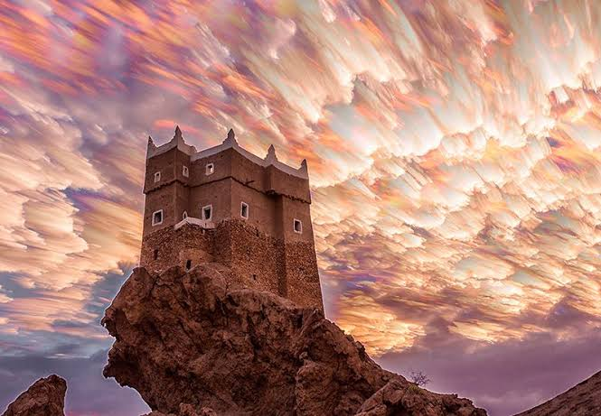

حصن الغويزي
الموقع: المدخل الشمالي لمدينة المكلا - حضرموتيُعد حصن الغويزي واحداً من أندر التحف المعمارية العسكرية في اليمن، حيث شُيّد في عام 1716م خلال عهد سلاطين آل بريك لحماية مدينة المكلا وتأمين مدخلها الشمالي من الهجمات والمداهمات القادمة من جهة الوديان والمجاري الجبلية. تحول الحصن لاحقاً في عهد السلطنة القعيطية إلى نقطة مراقبة واستطلاع رئيسية تشرف على طُرق التجارة والقوافل البشرية المتجهة نحو ساحل حضرموت.
يتميز الحصن بأسلوب بنائه الاستثنائي، إذ أُقيم على قمة صخرة مجوفة ومستقلة ترتفع فوق سطح الأرض، ودُمجت أساساته بالحجارة مع الأدوار العليا المكونة من اللبن (الطين المجهّز تقليدياً) والخشبيات المتينة. يتألف الحصن من طابقين ينتهيان بسطح محاط بأبراج دائرية صغيرة وشرفات مخصصة للمدافع والرماة، مما يجعله شاهداً حياً على قدرة المعماري اليمني على توظيف البيئة الطبيعية الصخرية لبناء معاقل دفاعية شاهقة ومستدامة.